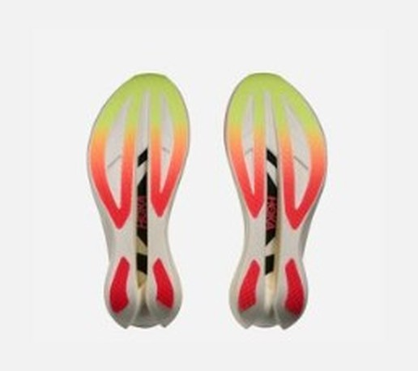
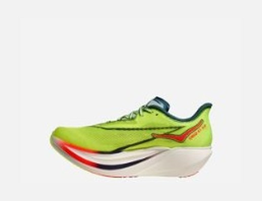

RACE｜レーシング
最も弾み、最も不安定。
現行のスーパーシューズで最も弾む、と海外レビューが口を揃える1足。そして数字を見る限り、最も扱いが難しい1足でもある。¥38,500を払う前に、自分の接地を疑ったほうがいい。
終盤まで重心の真下で接地できる。足首の筋力に自信がある。足幅は細め。サブ3〜3.5でミッドフット接地の人。
かかとから強く着地する。後半にフォームが崩れる。幅広の足。「初めてのカーボン」として買う人。


SAは衝撃吸収の指標で、大きいほど衝撃を吸う。RunRepeatの計測ではかかとで170 SA。同じレース靴のエンドルフィン プロ5が137 SAだから差は大きく、マックスクッションのNike Vomero Premiumに匹敵する水準だ。
この靴の最大の読みどころ。公称はかかと38mm／前足部31mmだが、ラボ実測ではかかと40.5〜44.5mm、前足部31.1mm、ドロップは13.4mmまで広がった。極端なロッカー形状と、かかと後端のせり上がりが原因とされる。測り方で数字が大きく動く靴なので、公称値だけで判断しないほうがいい。
もっとも、フォームが非常に柔らかいため（硬度32.9 AC）、荷重時には沈み込み、体感は公称に近い7mm前後になると説明されている。止まった状態の13mmと、走っている時の7mm。どちらも本当で、だからこそ試着で立っただけでは判断できない。
靴を30度曲げるのに必要な力は16.8N。エンドルフィン プロ5の26.1Nより3割以上小さい。肉抜きしたプレートの効果で、カーボン靴特有の突き上げを和らげている。
かかとの支え（ヒールカウンター）の剛性は5段階の1。前足部の幅は107.6mmで、カテゴリ平均114.4mmより細く、エンドルフィン プロ5の120.1mmと比べると12.5mmも狭い。柔らかいフォームに細い土台。弾む靴がブレやすいのは当然の結果だ。
大きいほど衝撃を吸う。
RunRepeatの計測値。
寿命データのある6足で試算した概算。シエロとアディオスは350km、プロ5は500km、デイリーは想定寿命の中間値（ライダーは800km）で計算。
| シエロ X1 3.0 | エンドルフィン プロ5 | |
|---|---|---|
| 衝撃吸収 | 170 SA | 137 SA |
| フォーム硬度 | 32.9 AC | 33.3 AC |
| 曲げ剛性 | 16.8N | 26.1N |
| 前足部の幅 | 107.6mm | 120.1mm |
| 実測ドロップ | 13.4mm | 8.7mm |
| グリップ（摩擦係数） | 0.72 | 0.68 |
| 想定寿命 | 約300〜400km | 500km以上 |
価格差は¥1,100しかない。弾みと衝撃吸収を取るか、安定と寿命を取るか。性能の方向が正反対なので、迷う余地はあまりない。
重心の真下で接地し、フォームとロッカーを正確に踏める走者には、爆発的にストライドが伸びると評価されている。反面、接地が体の前に流れるヘビーヒールストライカーや、終盤に足首を抑えられなくなったランナーでは、足首と膝の安定筋に強い負担がかかり、急なペースダウンを招くリスクが複数の媒体で警告されている。
グリップは改善点。前作で指摘された濡れた路面での滑りに対し、アウトソールを再設計し、摩擦係数0.72を記録した。
1kmあたり約110円（¥38,500÷350km）。寿命のデータがあるモデルで最も高くつく。翌週も普通に仕事がある人間にとって、一番の損失は故障だ。自分の接地が分からないなら、まず動画を撮る。30km過ぎのフォームが崩れていないと確認できてから検討しても遅くない。
買うなら本番限定。日常のジョグはウエーブライダー 30のような安定した靴に任せ、脚を守る。
最も弾み、最も衝撃を吸い、最も不安定。性能は本物だが、走者に身体の制御を要求するスペシャリスト向けの靴だ。条件を満たす人だけが買えばいい。
※本記事はメーカー公表値、海外ラボの計測データ（RunRepeat等）、国内外のレビューをもとにした分析です。ラボ値は計測条件により変わります。